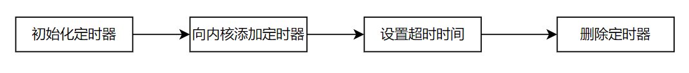

10 Linux内核定时器
Linux内核定时器
在编写驱动的时候，可能也会用到定时器，比如按键消抖…由于驱动的代码是在内核态，所以就需要使用内核态的定时器，而不是用户态的定时器
Linux内核的定时器相对于以前STM32用的定时器，有以下区别：
- 内核定时器是软件定时器，采用系统时钟实现，并不是硬件定时器
- 定时器超时是由软件设置和管理的，通过内核或者应用程序来控制，而回调函数的执行是在预定的时间点或者时间间隔后发生的，不算中断
- 内核定时器不是周期运行的，超时后就会停止，需要手动再次开启（如果还需要用的话）

1.基本数据结构
Linux内核使用如下的结构体来描述一个定时器：
1 | struct timer_list { |
expires：表示定时器的到期时间，以jiffies单位表示。jiffies是 Linux 内核中的一个全局变量，表示自系统启动以来的时钟节拍数。内核以HZ作为1s的节拍数，所以计算时可能用到该宏定义。定时器到期时，内核会检查当前jiffies是否达到或超过expires，以确定定时器是否到期。function：定时器到期时调用的回调函数，其原型为void (*function)(unsigned long)。当定时器到期时，内核会执行此函数来完成定时器设定的操作。- **
data**：传递给回调函数function的参数，通常用于向回调函数传递额外的数据。
2.定时器常用函数
2.1定时器初始化
定时器初始化有2种方式：
1 | // 法1：已过时 |
2.2启动定时器
初次使用定时器时，需要向内核添加该定时器，使其开始计时
1 | int add_timer(struct timer_list *timer); |
后续需要设置超时的时间（系统节拍数）
1 | int mod_timer(struct timer_list *timer, unsigned long expires); |
2.3删除定时器
当不再需要定时器时，可以使用以下函数来删除定时器，确保释放相关资源
1 | int del_timer(struct timer_list *timer); |
3.使用定时器的基本步骤
- 初始化定时器：通常使用
init_timer或者更现代的timer_setup函数来初始化一个timer_list结构体，并指定回调函数。 - 设置定时器：使用
mod_timer函数将初始化好的定时器添加到系统的定时器列表中，并设置定时器的到期时间。 - 删除定时器：使用
del_timer函数来删除定时器，确保在不再需要定时器时及时释放资源
All articles on this blog are licensed under CC BY-NC-SA 4.0 unless otherwise stated.